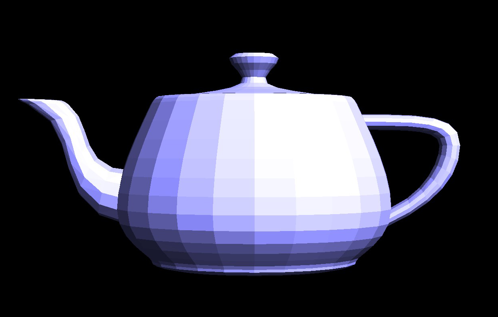
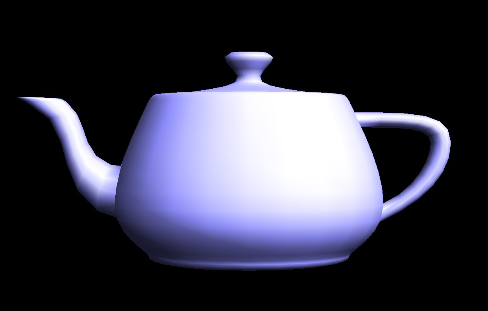
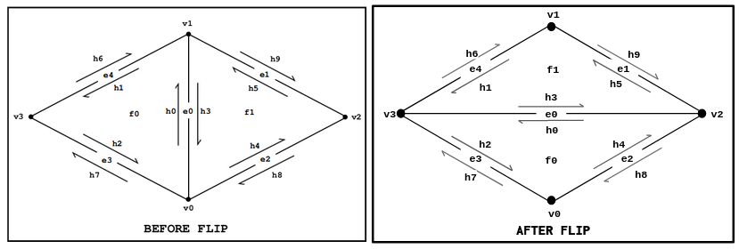
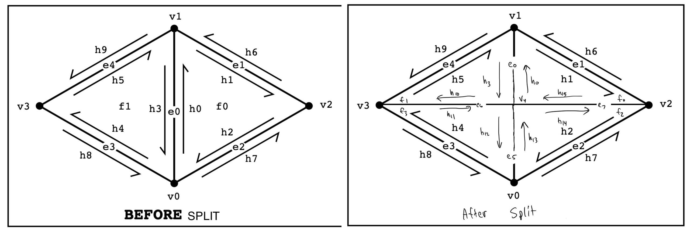
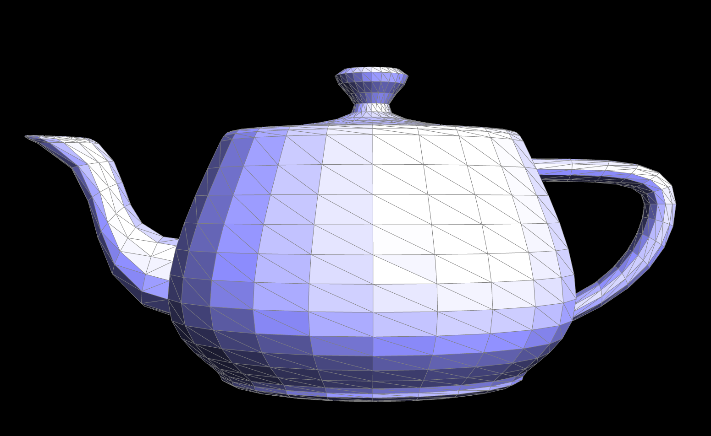
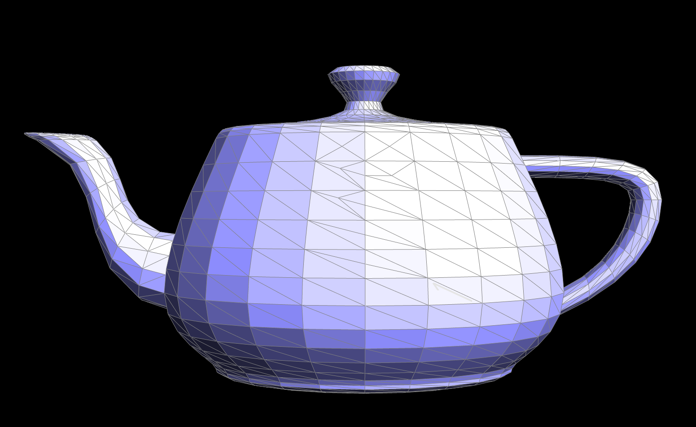
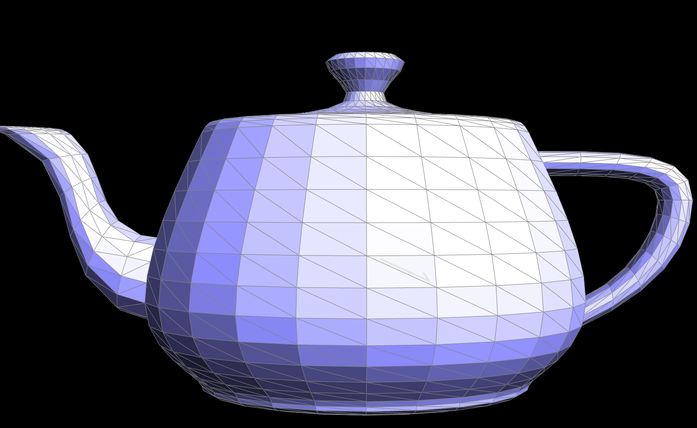
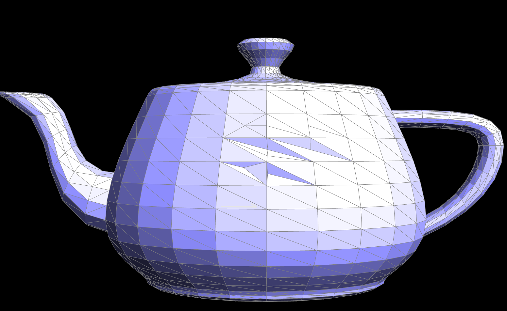

Task 2: Bezier Surfaces with Separable 1D de Casteljau
We now extend the de Castelijau algorithm from evaluating Bezier curves to evaluating Bezier surfaces. The algorithm was changed from performing lerps with control points in the 2D space to the 3D space. The logic of the algorithm mostly remains the same.

Section II: Triangle Meshes and Half-Edge Data Structure
Task 3: Area-Weighted Vertex Normals
We implemented area-weighted vertex normals for Phong shading, improving on smoothness of surfaces from the flat shading method. To achieve this, we first used the halfedge data structure to traverse the neighbor vertices of a center vertex. Two edges were found through the difference between the center vertex and two neighbor vertices. Then we used the cross product of the two edges to calculate each normal, and summed up all the normals. Lastly we returned the approximate unit normal at that vertex to obtain Phong shading.


Task 4: Edge Flip
We have a thorough edge flip implementation that can use used to flip any edge in the mesh as long as it is not a boundary edge.
We first assign variable names to all the halfedges, edges, vertices, and faces in the given configuration. Then we reassign all
properties to the halfedges using the Halfedge::setNeighbors(...) function. After that we keep
reassigning all the other edges, vertices, and faces to have the correct correspopnding halfedge. Our assignments are based on
the figure below.

An interesting but frustrating problem we had was that the UI window was freezing up due to coding error when an edge flip was attempted, so it was hard to debug through the UI. However, finally when the UI stopped freezing all was working well. Seeing the frozen window led us to being safe and setting every variable, even if it might not have been all needed, to make sure no holes were found. Another mistake was wrongly assuming that some halfedges belonged in the two faces shown in the diagram, as well as wrongly assuming the next halfedge properties for some halfedges. This was realized thanks to browsing a comment on Piazza.
Task 5: Edge Split
We have a thorough edge split implementation that can use used to split any edge in the mesh as long as it is not a boundary edge.
It's implementation is quite similar to edge flipping. We first assign variable names to all the halfedges, edges, vertices, and faces
in the given configuration; however, we have to create three new edges, sixteen halfedges, two faces, and an extra vertex. Then we reassign all
properties to the halfedges using the Halfedge::setNeighbors(...) function. After that we keep
reassigning all the other edges, vertices, and faces to have the correct correspopnding halfedge.Our assignments are based on
the figure below.

Again, we had issues with the UI freezing after incorrectly assigning pointer values. This was fixed by careful review of the diagram. Another issue we had is that we used 2 different "starting" diagrams while our initial pointer assignments stayed this same. This caused some holes in our tea pot.
|

|

|
|

|

|